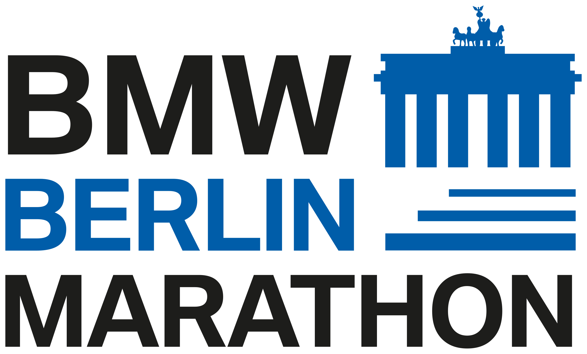

Trabajo como Software Engineer en MELI y en mi tiempo libre gusta correr carreras de calle y de trail!
"La felicidad se encuentra a lo largo del camino, no al final"
| Grupo de Edad | Hombres | Mujeres |
|---|---|---|
| 18-34 | 3:00:00 | 3:30:00 |
| 35-39 | 3:05:00 | 3:35:00 |
| 40-44 | 3:10:00 | 3:40:00 |
| 45-49 | 3:20:00 | 3:50:00 |
| 50-54 | 3:25:00 | 3:55:00 |
| 55-59 | 3:35:00 | 4:05:00 |
| 60-64 | 3:50:00 | 4:20:00 |
| 65-69 | 4:05:00 | 4:35:00 |
| 70-74 | 4:20:00 | 4:50:00 |
| 75-79 | 4:35:00 | 5:05:00 |
| 80+ | 4:50:00 | 5:20:00 |